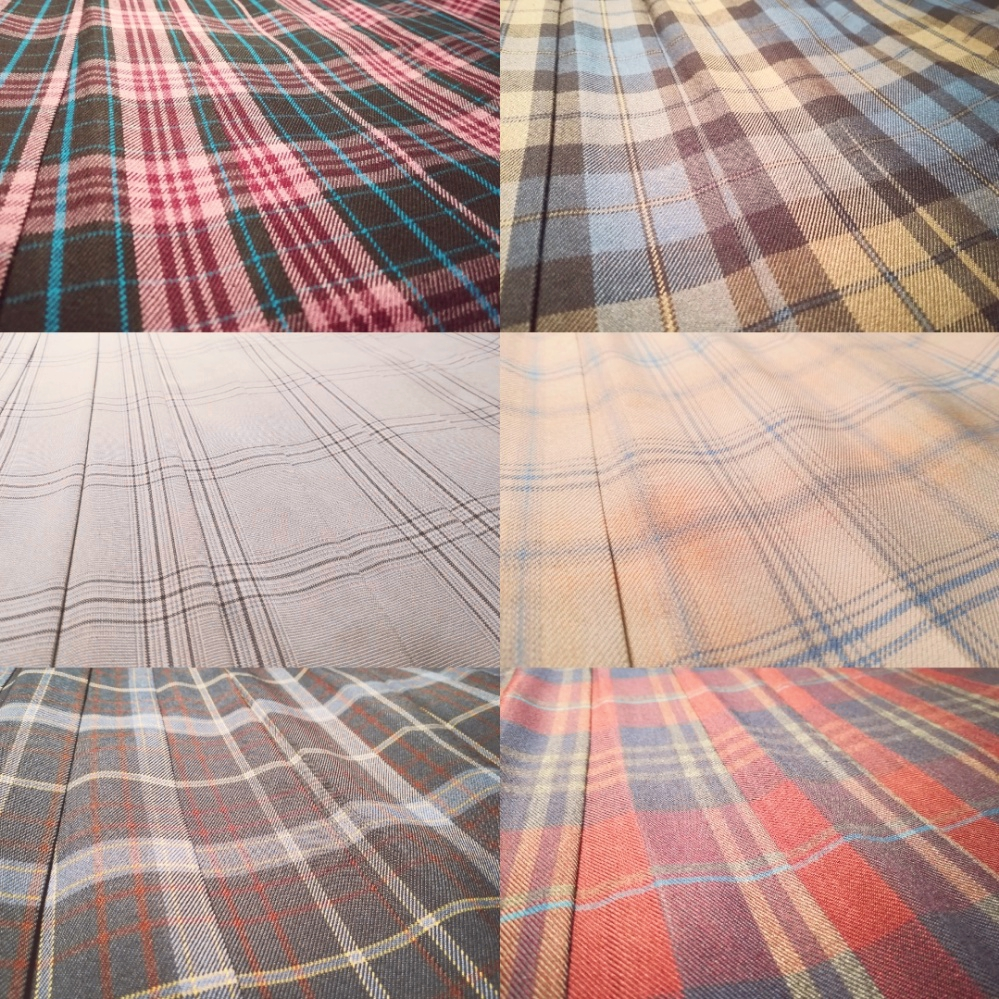
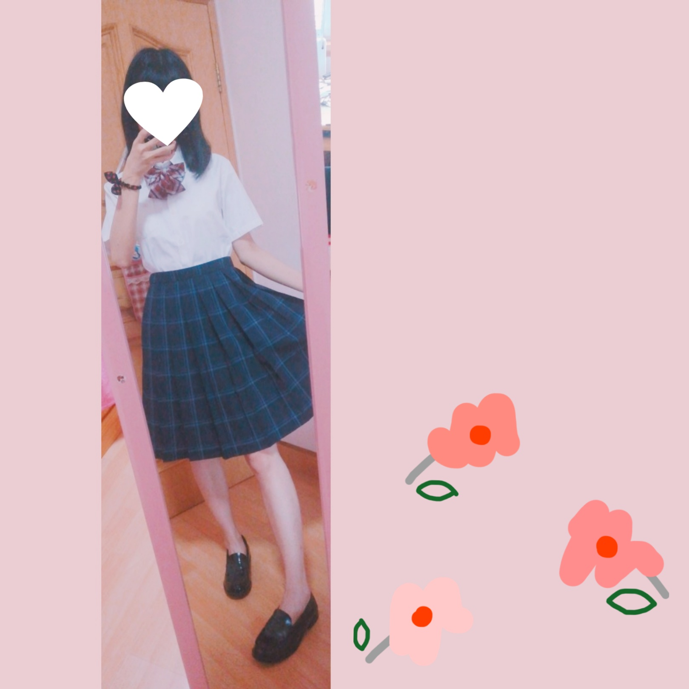
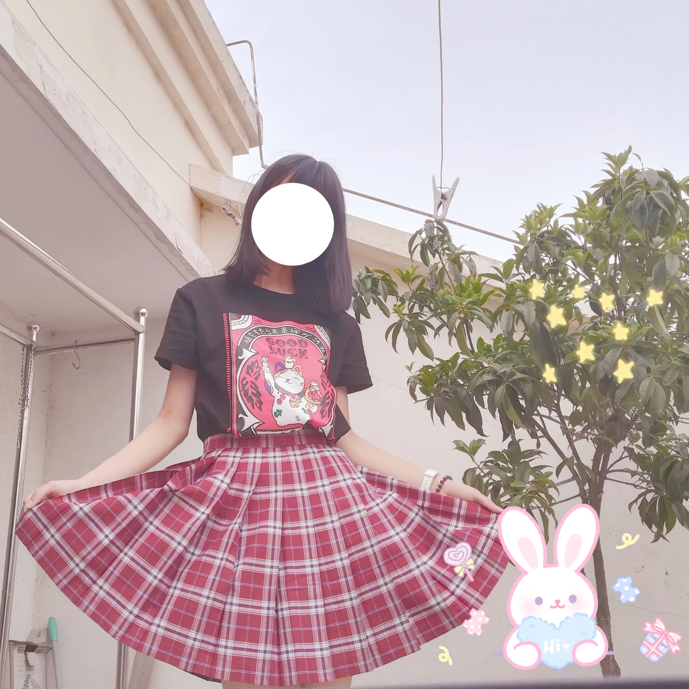

·MY SKIRTS
Do you know JK uniforms?(click to learn more!)
JK is a pop word in Japan which stands for girls in senior high.
Among all kinds of JK uniforms, I love collecting pleated skirts best, and I often wear them in my daily life. (Of course I can't do this when there is PE lessons. XP)
My mum says they are all the same but I don't think so.They are different in colour, length and layout. Design matters so much.

❤❤❤
Click the purple button to go back.